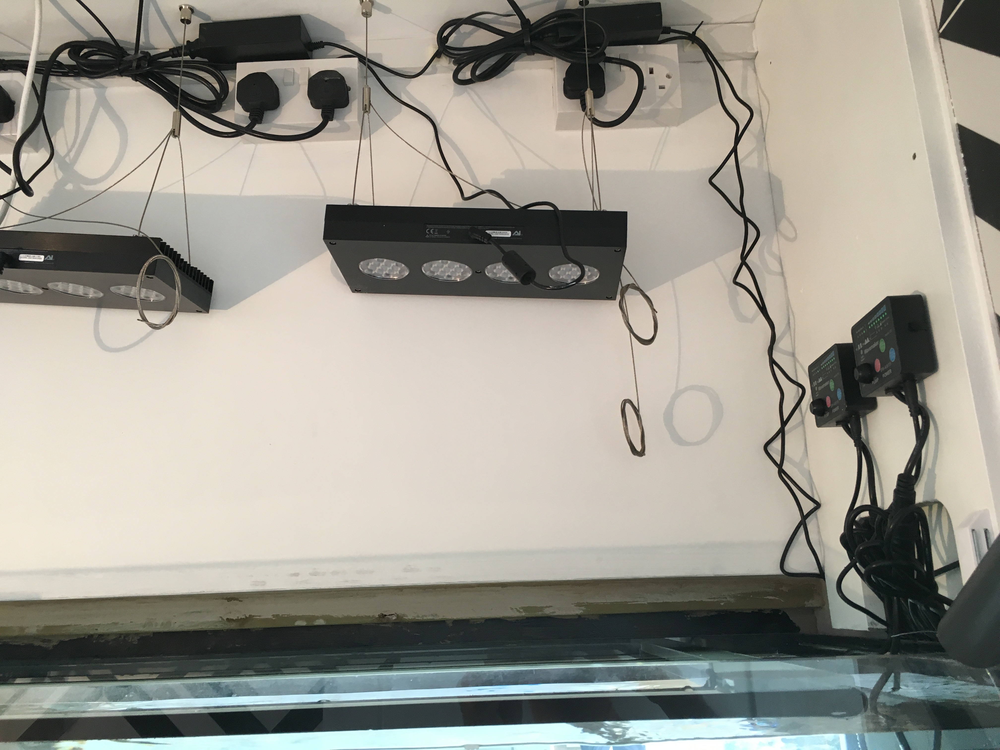
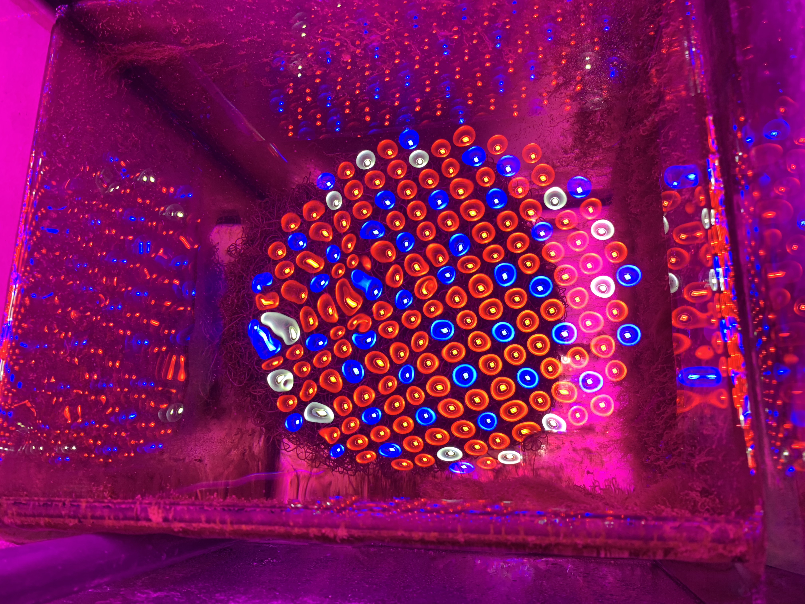
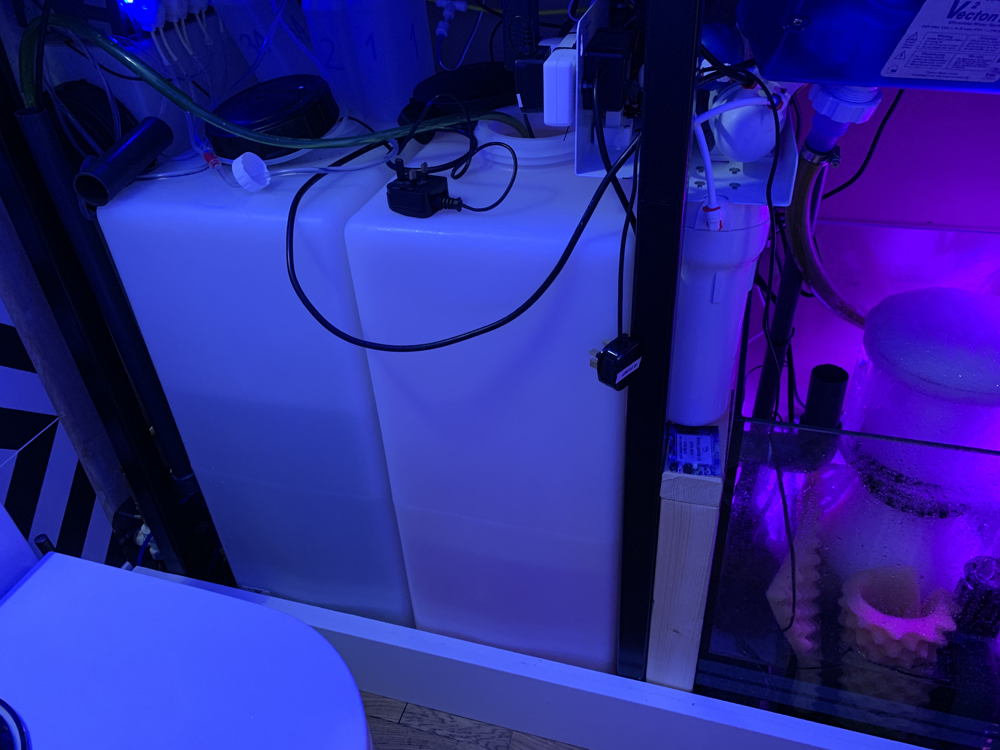
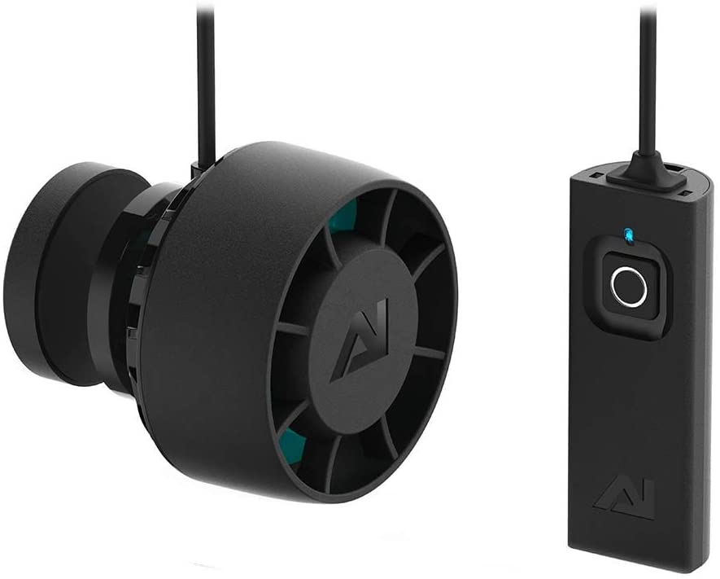
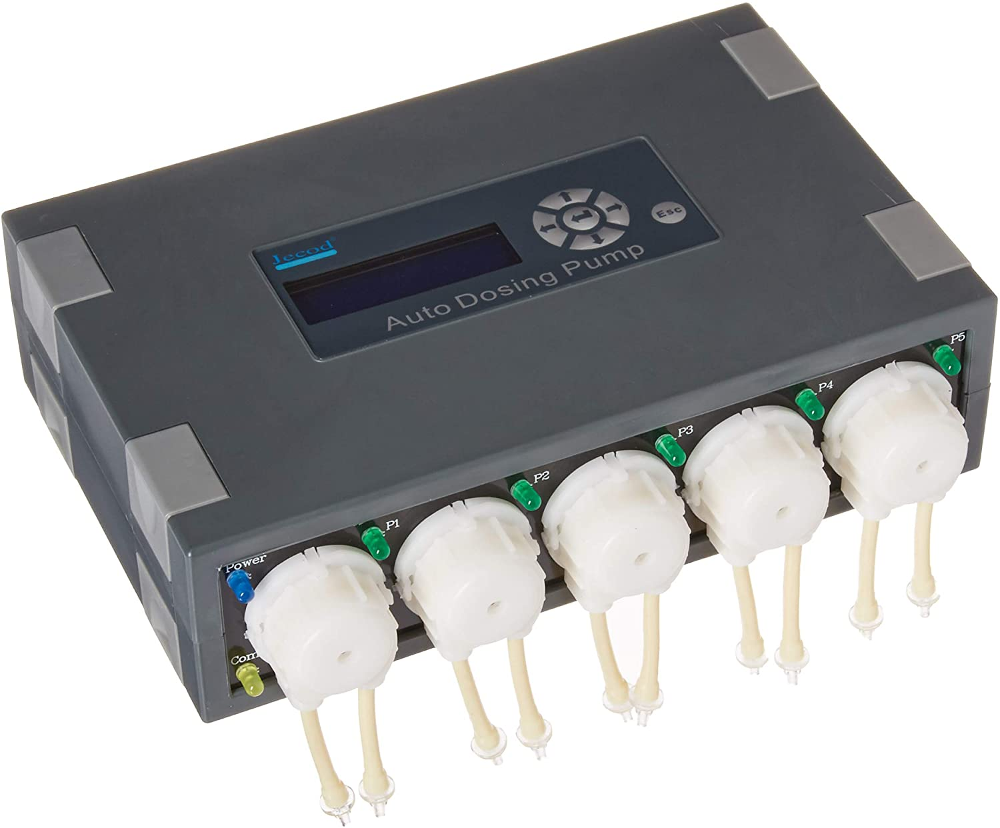

A fehérjelehabzó egy lényeges eleme egy tengeri akvárium "szűrésének". Számos hasznos funkciója van: gázcserét biztosít az akvárium számára, eltávolítja a még nem lebomlott fehérjék nagy részét, így a baktériumoknak, szűrőalgáknak kevesebb feladatuk marad. Ebben az esetben is a kedvenc lehabzómat választottam, leginkább hatékonysága, és ár/érték aránya miatt.

fehérjelehabzó
Egy korallos akváriumnál nagyon fontos szempont a megfelelő világítás. A korallok többségében szimbiotikus algák élnek, amik fotoszintetizálnak. A gazdaállat az algák által termelt cukrokat fogyasztja. Lényeges a világítás megfelelő intenzitása és spektruma, hogy koralljaink egészségesek maradjanak és fejlődjenek. Az elmúlt években a tengeri akvarisztikában is megjelent a LED technológia számos előnyével, és néhány hátrányával. Előszeretettel használom az Al lámpáit, ebben az esetben 2db AL Hydra 52-t és egy AL Hydra 26-ot. A lámpák spektruma és intenzitása 7 csatornán, időben eltolva is állítható, így megtalálhatjuk a koralloknak és a szemünknek is legmegfelelőbb beállítást.
világítás
A korallok főleg a külső zátonyokon, alacsony tápanyagtartalmú vízben élnek. Ebben a közegben mutatják meg gyönyörű színeiket. Magasabb tápanyagszint esetén felszaporodnak a bennük élő algák, amitől barnás színűvé válnak, rosszabb esetben elpusztulnak. A felesleges tápanyag megkötésében segítenek a különféle algák, közülük alacsony tápanyagszinten a leghatékonyabbak a Chaetomorpha algák, ezért én mindig ezeket használom. A megvilágításukhoz növényekre optimalizált ledlámpát használok. Egy időkapcsoló segítségével nagyon jól lehet szabályozni, hogy mennyire csökkentsék le az elérhető nitrogén és foszfor mennyiségét, ugyanis a túl alacsony szint szintén a korallok pusztulásához, vagy más, nem kívánt algák, esetleg cianobaktériumok megjelenéséhez vezethet.
algaszűrő
A csapból folyó víz tökéletes az emberi fogyasztásra, viszont a tengervíz előállítására alkalmatlan. A megfelelő működéshez nagy tisztaságú vizet készítek egy többlépcsős rendszerrel:
- mechanikai szűrés
- aktív szenes szűrő
- RO membrán
- kevertágyas ioncserélő gyanta
Az így előállított nagytisztaságú vizet részben az elpárolgott víz pótlására használom automatika segítségével, a másik felét szintetikus tenger sóval keverve a vízcserékhez használom. A teljes rendszer kialakítása lehetővé teszi az egyszerű, gyors és tiszta vízcserét.
víz előkészítés
A korallok helyhez kötött életet élnek. A gázcserét, a tápanyagfelvételt és a méreganyagok leadását a víz mozgásának függvényében tudják elvégezni. A korallok fajtájától függ, hogy milyen vízmozgást állítunk be. A zátony külső, felső részén növő koralloknak nagyságrendekkel több vízmozgásra van szükségük, mint a zátony által körülvett lagúnákban.
áramlás
A korallok és más, meszes vázú állatok, valamint algák egészségéhez és növekedéséhez elengedhetetlen, hogy ezekhez alapanyagokat biztosítsunk. Számos módszer létezik erre, én utóbbi időben a dózispumpával történő adagolást használom. Az egymással nem reagáló elemeket, vegyületeket vizes oldat formájában nagy pontossággal lehet így adagolni. Fontos a megbízható vezérlés az adagolópumpa használatánál.
